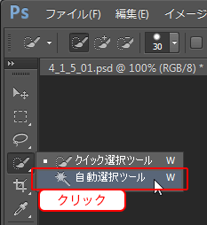
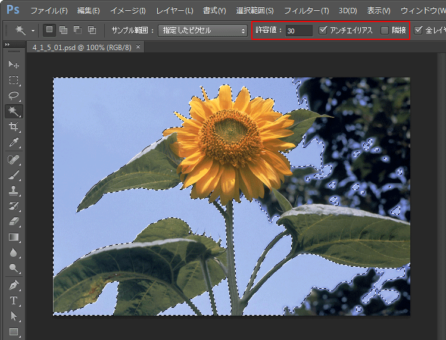
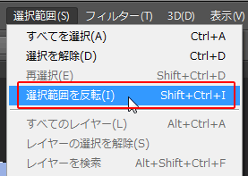
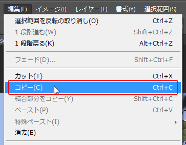

本項では、色を指定して、同じ色を一度に選択するツール自動選択ツールを学習します。
[自動選択ツール]は同じカラー値を持つ色を一度に選択することができます。
[塗りつぶしツール]と同様に、コントロールパネルで[隣接]チェックボックスと、
[許容値]の数値を操作して一度に効率的に選択することができます。
素材ファイル「PS04」から、素材ファイル4_1_5_01.psdを開きましょう。
[ツールパネル]から[クイック選択ツール]アイコンを長押しし、
[自動選択ツール]を選択します。

[コントロールパネル]の[許容値]に《30》、[アンチエイリアス]のチェックボックスを「オン」、
[隣接]のチェックボックスを「オフ」にしてから、画像の空の部分をクリックしましょう。
空の部分全体が選択されます。

選択範囲を反転しましょう。
メニューバーの[選択範囲]-[選択範囲を反転]を選択します。

次に、メニューバーの[編集]-[コピー]を選択しましょう。

素材フォルダ「PS04」から、素材ファイル4_1_5_02.psdを開きましょう。
先ほどコピーした画像を、貼り付けて合成しましょう。
メニューバーの[編集]-[ペースト]を選択します。
以上でこの節の学習は終了です。
ファイルは閉じて次の項へ進んでください。